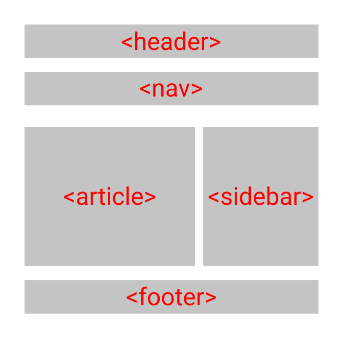

Semantik Elemen pada HTML
Semantik elemen adalah elemen yang menyatakan makna dan tujuan. Tujuannya agar kode HTML mudah dibaca dan tidak ada penyalahgunaan tag. Elemen semantik bagus untuk SEO dan juga dapat meningkatkan accessibility. Daftar elemen-elemen semantik yaitu
